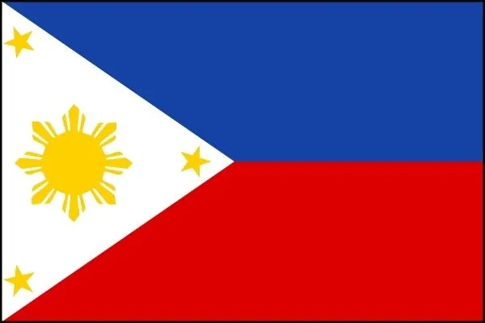
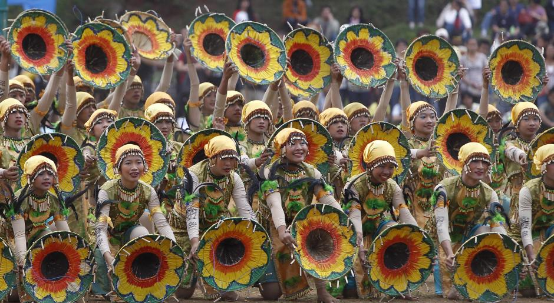
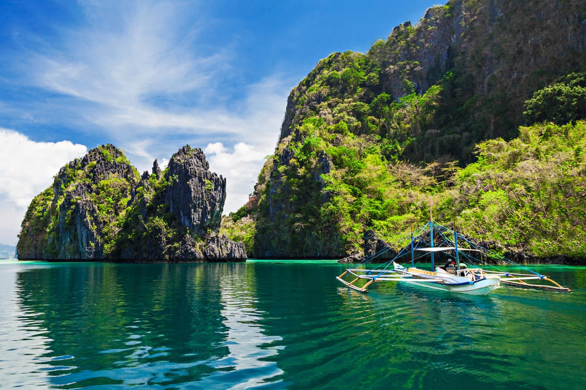
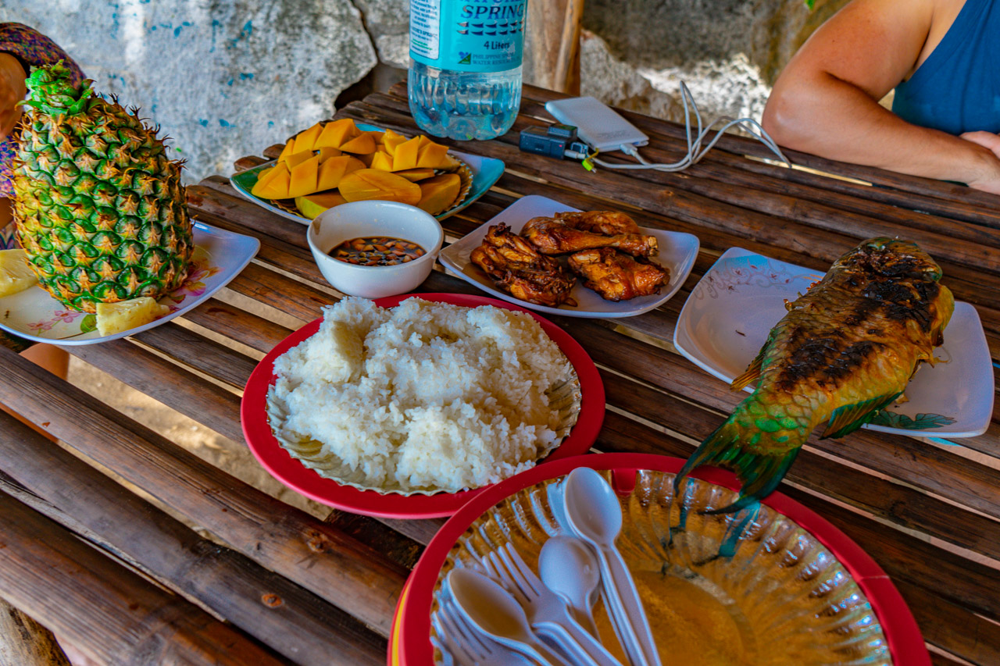
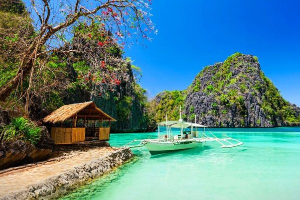

History
The Philippines has a rich history that spans thousands of years. It was colonized by the Spanish in the 16th century and became an American colony in the 19th century. Independence was achieved in 1946, becoming a free and sovereign nation.
The strategic location of the Philippines made it a central point in trade between Asia and the West. It was under Japanese rule during World War II, and the struggle for freedom shaped the nation's identity.
Culture
Filipino culture is a blend of indigenous, Spanish, American, and Asian influences, reflected in its traditions, festivals, and arts. Traditional dances like Tinikling and music like Kundiman are integral parts of the cultural heritage.
The Philippines celebrates numerous colorful and vibrant festivals such as Sinulog in Cebu and Ati-Atihan in Kalibo. These festivals are celebrations of the country's religious and cultural heritage.
Tourism
The Philippines is known for its beautiful beaches, paradise islands, and rich biodiversity. Popular destinations include Boracay, Palawan, and Cebu. The country is a haven for nature lovers and adventurers.
Activities like diving, snorkeling, hiking, and cave exploration are very popular. The Tubbataha Reef, a UNESCO World Heritage site, is one of the best diving spots in the world.
Culinary
Filipino cuisine is diverse and flavorful, with famous dishes like adobo, sinigang, and lechon that reflect the country's cultural richness. Each region has its specialties, contributing to culinary diversity.
Additionally, street food is an important part of the Filipino experience. Dishes like balut (fertilized duck egg) and halo-halo (shaved ice dessert) are popular among locals and tourists alike.
Curiosities
The islands were named by the Spaniards in honor of King Philip II of Spain, and during the 333 years of Spanish rule, the term Filipino came to designate Spaniards born in the archipelago.